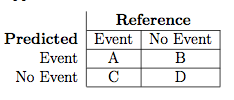
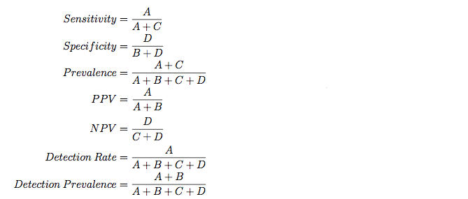

Contents
Evaluating Test Sets
A function, postResample, can be used obtain the same performance measures as generated by train for regression or classification.
caret also contains several functions that can be used to describe the performance of classification models. The functions sensitivity, specificity, posPredValue and negPredValue can be used to characterize performance where there are two classes. By default, the first level of the outcome factor is used to define the "positive" result (i.e. the event of interest), although this can be changed.
The function confusionMatrix can also be used to summarize the results of a classification model. This example uses objects from the webpage for Model Training and Tuning:
testPred <- predict(gbmFit3, testing)
postResample(testPred, testing$Class)
Accuracy Kappa 0.8627 0.7252
sensitivity(testPred, testing$Class)
[1] 0.8519
confusionMatrix(testPred, testing$Class)
Confusion Matrix and Statistics
Reference
Prediction M R
M 23 3
R 4 21
Accuracy : 0.863
95% CI : (0.737, 0.943)
No Information Rate : 0.529
P-Value [Acc > NIR] : 5.01e-07
Kappa : 0.725
Mcnemar's Test P-Value : 1
Sensitivity : 0.852
Specificity : 0.875
Pos Pred Value : 0.885
Neg Pred Value : 0.840
Prevalence : 0.529
Detection Rate : 0.451
Detection Prevalence : 0.510
Balanced Accuracy : 0.863
'Positive' Class : M
The "no--information rate" is the largest proportion of the observed classes (there were more actives than inactives in this test set). A hypothesis test is also computed to evaluate whether the overall accuracy rate is greater than the rate of the largest class. Also, the prevalence of the "positive event" is computed from the data (unless passed in as an argument), the detection rate (the rate of true events also predicted to be events) and the detection prevalence (the prevalence of predicted events).
Suppose a 2x2 table with notation

The formulas used here are:

When there are three or more classes, confusionMatrix will show the confusion matrix and a set of "one-versus-all" results. For example, in a three class problem, the sensitivity of the first class is calculated against all the samples in the second and third classes (and so on).
Also, a resampled estimate of the training set can also be obtained using confusionMatrix.train. For each resampling iteration, a confusion matrix is created from the hold-out samples and these values can be aggregated to diagnose issues with the model fit.
For example:
confusionMatrix(gbmFit3)
Cross-Validated (10 fold, repeated 10 times) Confusion Matrix
(entries are percentages of table totals)
Reference
Prediction M R
M 46.4 10.1
R 7.1 36.4
These values are the percentages that hold-out samples landed in the
confusion matrix during resampling. There are several methods for
normalizing these values. See ?confusionMatrix.train for details.
Evaluating Class Probabilities
The package also contains two functions for class probability predictions for data sets with two classes.
The lift function can be used to evaluate probabilities thresholds that can capture a certain percentage of hits. The function requires a set of sample probability predictions (not from the training set) and the true class labels. For example, we can simulate two-class samples using the twoClassSim function and fit a set of models to the training set:
set.seed(2) trainingSim <- twoClassSim(1000) evalSim <- twoClassSim(1000) testingSim <- twoClassSim(1000) ctrl <- trainControl(method = "cv", classProbs = TRUE, summaryFunction = twoClassSummary) set.seed(1045) fdaModel <- train(Class ~ ., data = trainingSim, method = "fda", metric = "ROC", tuneLength = 20, trControl = ctrl) set.seed(1045) ldaModel <- train(Class ~ ., data = trainingSim, method = "lda", metric = "ROC", trControl = ctrl) set.seed(1045) c5Model <- train(Class ~ ., data = trainingSim, method = "C5.0", metric = "ROC", tuneLength = 10, trControl = ctrl)
## A summary of the resampling results: getTrainPerf(fdaModel)
TrainROC TrainSens TrainSpec method 1 0.964 0.9227 0.8596 fda
getTrainPerf(ldaModel)
TrainROC TrainSens TrainSpec method 1 0.9044 0.8343 0.7913 lda
getTrainPerf(c5Model)
TrainROC TrainSens TrainSpec method 1 0.9496 0.8676 0.8531 C5.0
From these models, we can predict the evaluation set and save the probabilities of being the first class:
evalResults <- data.frame(Class = evalSim$Class) evalResults$FDA <- predict(fdaModel, evalSim, type = "prob")[,"Class1"] evalResults$LDA <- predict(ldaModel, evalSim, type = "prob")[,"Class1"] evalResults$C5.0 <- predict(c5Model, evalSim, type = "prob")[,"Class1"] head(evalResults)
Class FDA LDA C5.0 1 Class1 0.99073 0.88382 0.8446 2 Class1 0.99166 0.75724 0.8882 3 Class1 0.88943 0.88838 0.5732 4 Class2 0.03117 0.01405 0.1690 5 Class1 0.75646 0.93207 0.4824 6 Class2 0.16122 0.05242 0.3310
The lift function does the calculations and the corresponding plot function is used to plot the lift curve (although some call this the gain curve). The value argument creates reference lines.
trellis.par.set(caretTheme()) liftData <- lift(Class ~ FDA + LDA + C5.0, data = evalResults) plot(liftData, values = 60, auto.key = list(columns = 3, lines = TRUE, points = FALSE))

From this we can see that, to find 60 percent of the hits, a little more than 30 percent of the data can be sampled (when ordered by the probability predictions). The LDA model does somewhat worse than the other two models.
The other function is for probability calibration. Other functions in the gbm package, the rms package and others. These plots can be used to assess whether the value of the probability prediction is consistent with the event rate in the data. The format for the function is very similar to the lift function:
trellis.par.set(caretTheme()) calData <- calibration(Class ~ FDA + LDA + C5.0, data = evalResults, cuts = 13) plot(calData, type = "l", auto.key = list(columns = 3, lines = TRUE, points = FALSE))

Processing Affy Arrays
For Affymetrix gene chip data, RMA processing (Irizarry, 2003) is a popular method of processing gene expression data. However, for predictive modeling, it has a drawback in that the processing is batch oriented; if an additional sample is collected, the RMA processing must be repeated using all the samples. This is mainly because of two steps in the processing: the quantile normalization process and the calculation of expression. Quantile normalization normalizes the data such that the between--chip distributions have equivalent quantiles and is very effective in improving the quality of the data. It is possible to let the samples in the training set define the reference distribution for normalization. For the expression calculation, a robust method such as a trimmed mean can be used to summarize the probe level data into a single summary metric per sample.
For example:
# first, let affy/expresso know that the method exists normalize.AffyBatch.methods <- c(normalize.AffyBatch.methods, "normalize2Reference") RawData <- ReadAffy(celfile.path = FilePath) Batch1Step1 <- bg.correct(RawData, "rma") Batch1Step2 <- normalize.AffyBatch.quantiles(Batch1Step1) referencePM <- pm(Batch1Step2)[, 1] Batch1Step3 <- computeExprSet(Batch1Step2, "pmonly", "trimMean") Batch2Step1 <- bg.correct(RawData2, "rma") Batch2Step2 <- normalize.AffyBatch.normalize2Reference(Batch2Step1, ref = referencePM) Batch2Step3 <- computeExprSet(Batch2Step2, "pmonly", "trimMean")